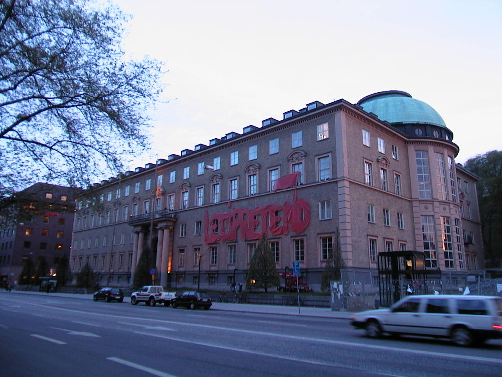
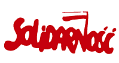

Mediaexpo #2
| Sparking people's interest in a conference (Mediaexpo)
dealing with the impact of media on society? The topic of the conference
in 2001 was "the power to transform reality". We decided to distort
the Solidarity logotype to read "Let's pretend" and applied
it to the venue in our own attempt at manipulating history. Installation
covered in Swedish press, DN 18 May 2001. |
